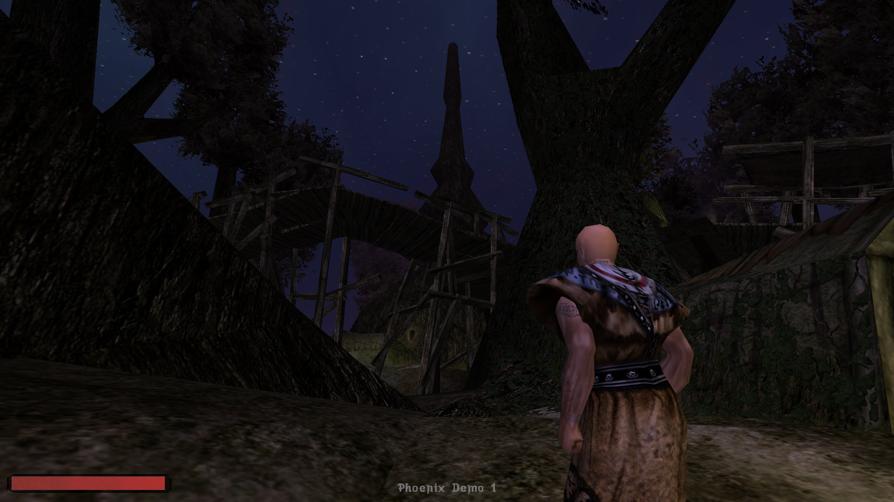
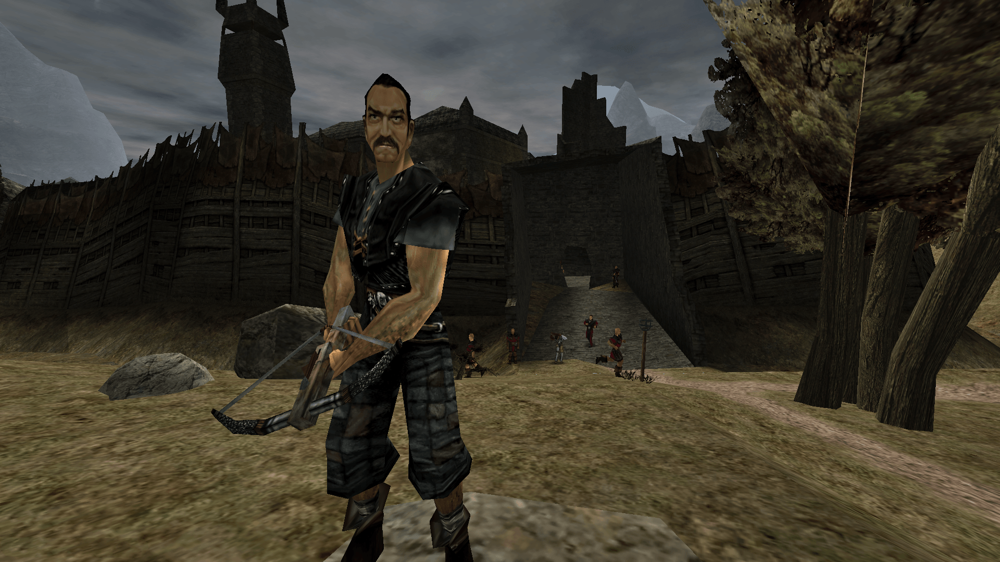
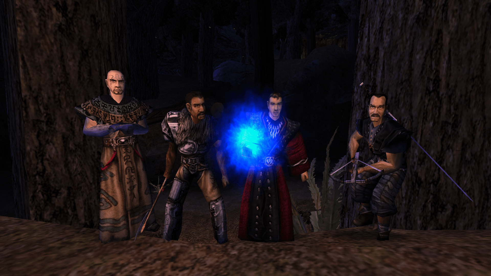
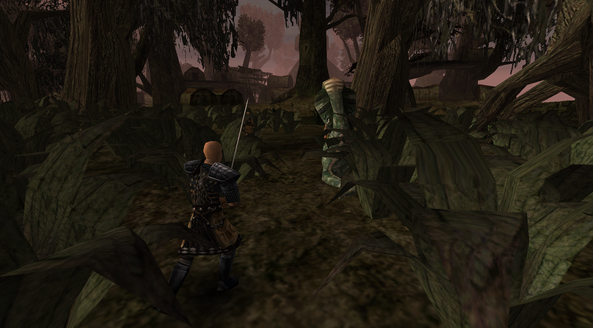

Gothic v0.8 = Phoenix Demo 1
Mit jeder Phoenix Demo gehen wir weiter zurück in der Zeit und realisieren mehr von der ursprünglichen Vision von GOTHIC, das den Arbeitstitel "Phoenix" trug und sich stark unterschied von der Release Version, in welcher Piranha Bytes nur Fragmente jener Vision verwirklichen konnte.
Demo 1 fokussiert sich ganz auf Gothic v0.8. Sie präsentiert eine Welt und Geschichte wie konzipiert in der ersten Jahreshälfte des Jahres 2000 und gibt einen ersten Einblick in die radikale Vision eines Spiels, die nie das Licht der Welt erblickte.
[TEASER Video]
Wichtig: In dieser Demo werden noch keine neu geschriebenen Storyinhalte enthalten sein. Im Bezug auf Dialoge fokussiert sie sich auf das, was Piranha Bytes in dieser Zeit tatsächlich selbst im Spiel implementiert oder in Dokumenten dieser Zeit zu Papier gebracht hatten. Das bedeutet auch, dass viele wiederhergestellten Charaktere noch nichts oder nicht viel zu sagen haben, weil entweder noch keine Dialoge für sie geschrieben waren oder wir keinen Zugriff auf solche Dialoge haben. In dieser Demo blenden wir Infos in Textform ein, um den Spieler zu informieren, was an bestimmten Stellen hätte kommen sollen, aber noch nicht umgesetzt war. In Phoenix Demo 2 (in der wir weiter zurück ins Jahr 1999 gehen, als die Vision der Welt und Story noch weit umfangreicher waren als 2000), beginnen wir all diese Lücken zu füllen.
Wir sind in Kontakt mit mehreren der ursprünglichen Entwickler, die die Gothic IP schon seit langem verloren haben (sie waren uns auch bei der Realisierung unseres umfassenden Gothic Archivs behilflich, das im Rahmen von Phoenix entstand). Demo 1 sollte als eine restaurierte und sehr stark verbesserte Entwicklerversion betrachtet werden, die auf ihrem alten Material basiert. Sie ist KEIN fertiges Spiel und soll das auch nicht sein. Auch aus historischen Gründen wollen wir in dieser Demo den letzten Stand von Piranha Bytes präsentieren, wie er von uns in jahrelanger Arbeit rekonstruiert und umfangreich korrigiert worden ist. Den letzten Stand bevor sie die Story geändert und in ihrem Umfang reduziert haben, um die Veröffentlichung zu retten, weil, wie wir wissen, die Entwicklung von GOTHIC andernfalls eingestellt und das Spiel nie veröffentlicht worden wäre.
Features:
[Instead of a mere list present the points
as captions to related screens,
add music sample, a fixes video etc.]
- Spielwelt: Alle Level gemäß v0.8 wiederhergestellt oder rekonstruiert; mit sämtlichen alten Locations, mit einer neuen Oberwelt für den Orksturm in Kapitel 5 (wie sie geplant aber nie umgesetzt wurde), einer älteren Version der Bergfeste aus v1.00 (ergänzt durch die Erweiterungen des Sequels) und mit allen originalen Dungeons aus dieser Ära: Verlassene Mine, Alte Mine, Freie Mine, die unterirdische Orkstadt und der Alte Tempel in der Iteration von v1.00.
- Stil: Ästhetik der "späten Alpha". Leveltexturen, Rüstungsdesigns, Monsterdesign, Interface etc.
- Cut Content: Entfernte NPCs, Dialoge und Missionen (teilweise noch original vertont) aus Skripten und Dokumenten der 0.8 Ära. Ungenutzte, unvollständige, vergessene oder kaputte Ansätze in den Spieldaten: Items, Skriptfunktionen, KI Verhalten, Talente, Animationen, Soundeffekte, Partikeleffekte, ...
- Story: Demo 1 beinhaltet noch immer den Großteil der Release Story (die im Wesentlichen eine gekürzte Version der alten Story ist), aber folgt der originalen Kapitelstruktur: (1) Orientierungsphase → (2) Ritualvorbereitung → (3) Flutung der Alten Mine → (4) Eroberung der Freien Mine → (5) Orksturm → (6) Nemesis. Demo 1 rekonstruiert die Story in der Fassung von 2000 (die an sich schon eine gekürzte Version der Story von 1999 ist) in rudimentärer Form, mit den oben genannten, notwendigen Inhaltslücken und Sprüngen in der Geschichte, die in dieser Demo mit Absicht bestehen, um PB's letzten Stand der ~0.8-0.9 Story zu zeigen. Noch nicht enthalten sind die sich stärker unterscheidenden Gildenpfade und das damit verknüpfte vier Klassen Gameplay – sie werden teil späterer Versionen von Phoenix sein.
- Balancing: Komplett verschiedene Charakter- und Itemwerte, gemäß den Konzepten jener Zeit, die von 1997 bis 2000 fast unverändert blieben. Ein verändertes Exp System, um den Weg zum Immersive Sim Gameplay durch die vier Charakterklassen zu ebnen, das in zukünftigen Versionen von Phoenix umgesetzt werden wird.
- Musik: Kompletter Alpha Soundtrack entsprechend v0.8 rekonstruiert.
- Ambient Events: Alpha Screenshots von v0.8-0.9 haben Szenarien präsentiert, um mehr Atmosphäre zu schaffen, und die Illusion, dass die Welt so lebendig wäre, wie sie angekündigt und angedacht (aber nie tatsächlich gewesen) war. Diese Szenarien oder Spielsituationen waren nur für Promotionzwecke gestellt und nicht im Spiel. Jetzt ist vieles davon wirklich enthalten.
- Fixes: Um eine stabile und saubere Grundlage für Phoenix zu bereiten, wurde eine riesige Menge an Bugs und anderen Problemen in den Skripten und Assets des Grundspiels gefixt; über alle bisher veröffentlichten Community Patches hinaus. Animationen, Modelle (Level und Objekte), Texturen wurden gefixt; dutzende Assets wurden neu texturiert, wenn nötig auch re-modelliert, logische Inkonsistenzen wurden korrigiert. Nahezu sämtliche Assets wurden kritisch geprüft und mit größter Sorgfalt und Originaltreue (im Sinne von ~v0.8) überarbeitet. Eine detaillierte Übersicht aller Änderungen findet sich in unserem Changelog.
{kind=link}

{kind=link}

{kind=link}

{kind=link}

Voraussetzungen: Um diese Demo zu spielen, brauchst du eine Kopie von GOTHIC (2001), worauf Phoenix basiert. Eine legale und DRM-freie Kopie gibt es hier. Nach der Installation von GOTHIC kannst du die PHOENIX Demo in dein Gothic Verzeichnis installieren.
Demo Fortschritt
- Welt: 45%
- Story: 10%
- Rüstungen: 50%
- Monster: 75%
- Items: 35%
- Engine: 15%